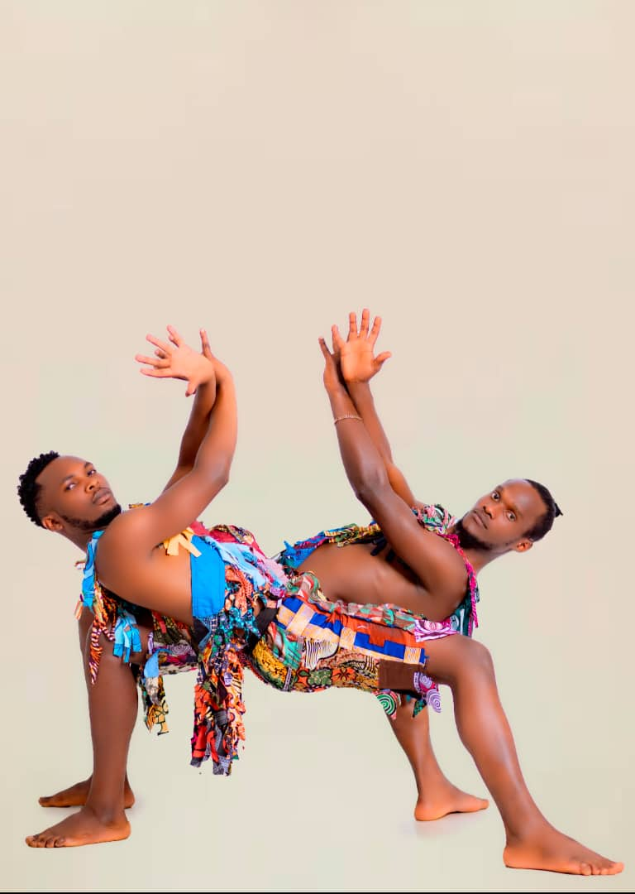

My journey as a dancer began in 2014, when I discovered the transformative power of movement through MindLeaps. What started as a search for self-expression soon became a lifelong passion. In the studio, I learned that dance is more than physical motion—it’s a language, a discipline, and a way of life.
Over the years, I’ve grown from a student into a performer and storyteller, sharing my art on some of Rwanda’s most celebrated stages, including the Ubumuntu Arts Festival and the Kwita Izina Ceremony. Each performance has deepened my belief that dance can connect people beyond words—conveying resilience, empathy, and hope.
Today, I continue to evolve as a dancer, choreographer, and mentor, dedicated to using movement as a tool for storytelling, healing, and transformation. My mission is to inspire the next generation of artists to find their own voice through dance—just as I once did.
